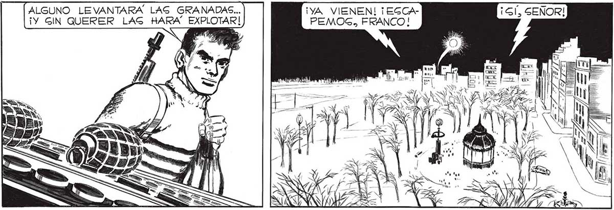
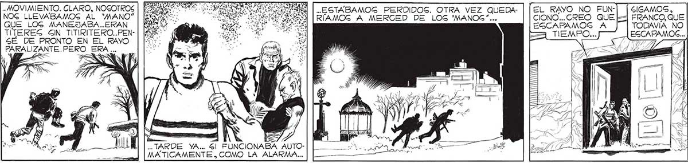
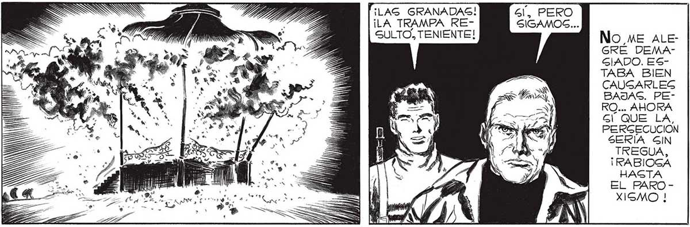

166 ALGUNO LEVANTARA LAG GRANADAS... ¡YA VIENEN! ¡EGCA¡Y GIN QUERER LAS HARA” EXPLOTAR! PEMOG, FRANCO! YX ( A XXX AENA YE" =RUOINYRNTRE || PASAMOS ENTRE 'CAGCARUDOS” Y HOMBREGEUA IRA y ANA MN ROBOTS. NINGUNO INTENTO” EL MENOR ... ..ESTABAMOG PERDIDOS. OTRA VEZ QUEDARÍAMOG A MERCED DE LOG 'MANOG”... . MOVIMIENTO. CLARO, NOGOTROS NOG LLEVABAMOS AL “MANO” QUE LOG MANEJABA..ERAN TÍTEREG GIN TITIRITERO..PENSÉ DE PRONTO EN EL RAYO PARALIZANTE.PERO ERA ... Mi US IN O sr o e. Y 1 TARDE YA... Gl FUNCIONA MATICAMENTE. COMO LA ALARMA... TILAG GRANADAS! Gl. PERO. ¡LA TRAMPA RE- SIGAMOS... SULTO, TENIENTE! No ME ALE: GRÉ DEMAGIADO. ESTABA BIEN CAUGARLES BAJAS. PERO... AHORA Gl QUE LA, PERGECUCION SERÍA GIN TREGUA, ¡RABIOGA HASTA EL PAROXISMO ! PRONTO GERA EGTO UN HERVIDERO DEP "CAGCARUDOG” Y HOMBRES-ROBOTG LANZADOG DETRAG NUESTRO... AN > 1) 3


